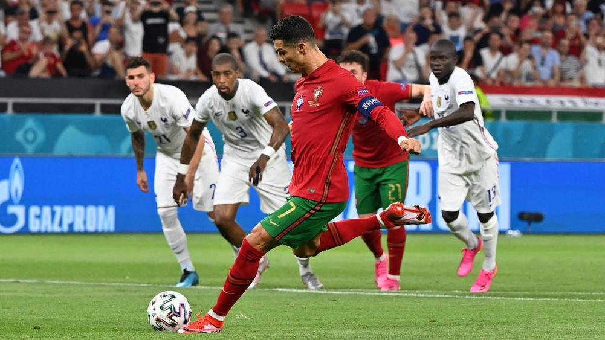

Cristiano Ronaldo, born on February 5, 1985, is a Portuguese professional footballer widely regarded as one of the greatest players of all time. He has won numerous awards and accolades throughout his career.
Ronaldo began his professional career with Sporting CP in Portugal before moving to Manchester United in 2003. During his time at Manchester United, he won three English Premier League titles and the UEFA Champions League. In 2009, he transferred to Real Madrid for a then-world record fee. At Real Madrid, Ronaldo achieved great success, winning four Champions League titles and becoming the club's all-time top scorer.
In 2018, Ronaldo joined Juventus in Italy. He continued to dominate the game, helping Juventus win multiple Serie A titles. Ronaldo has also achieved great success with the Portuguese national team, winning the UEFA European Championship in 2016 and the UEFA Nations League in 2019.
"I'm living a dream I never want to wake up from."
- Cristiano Ronaldo
Ronaldo is known for his incredible athleticism, technical skills, and goal-scoring ability. He has received numerous individual awards, including multiple FIFA Ballon d'Or titles.
Off the field, Ronaldo is involved in various philanthropic endeavors and is known for his charitable work. He has a massive global following and is regarded as a role model for aspiring young footballers.